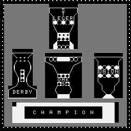
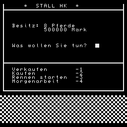

5 WINDOW:CLS:CLEAR 280
10 DIM PF$(53),X(53),Y(53),PW(53),PS(53),PN(53),BP(5),BV(5),RN$(27),RW(27)
20 DIM RX(27):GOSUB 2000:K=1
21 PRINT:PRINT:PRINT:PRINT "Ein Gesellschaftsspiel fuer die ganze ";
22 PRINT "Familie von ":PRINT:PRINT
23 PRINT "Michael Siedentopf"
26 PRINT:PRINT:PRINT
28 PRINT "version for Z 1013 K.Rothe/88":PRINT:PRINT:PRINT:PAUSE 2
29 PRINT:PRINT "BESCHREIBUNG UEBER EDITEX":PRINT:PRINT
30 PRINT "Bitte warten!":PRINT:PRINT:A$=CHR$(16):B$=CHR$(25):GOSUB 140:CLS
40 WINDOW 5,9,1,31:PRINT "Wieviel Spieler nehmen teil?":PRINT "Maximal 4!"
50 FOR I=1 TO 4:BV(I)=500000:NEXT I
60 PRINT:INPUT "--->";PE:IF PE<1 OR PE>4 THEN CLS:PRINT "maximal 4":GOTO 60
70 SZ=PE:CLS
80 FOR I=1 TO SZ:PRINT "Spieler";I;", wie heissen Sie?"
90 PRINT:INPUT "--->";SN$:CLS:SN$(I)=LEFT$(SN$,20):NEXT I
91 PRINT "Wieviel Runden werden gespielt?"
92 PRINT "Maximal 25!":PRINT:INPUT "--->";CG
93 IF CG>25 OR CG<1 THEN CLS:GOTO 91
94 CLS
100 WINDOW:FOR OO=1 TO CG
110 FOR O=1 TO SZ:GOSUB 280:NEXT O,OO
120 GOSUB 1750
130 END
140 FOR J=1 TO 52:PRINT A$;:PRINT " ";:PRINT B$;:READ PF$(J)
150 X(J)=INT(RND(1)*10+1):Y(J)=INT(RND(1)*(21-X(J))+X(J))
160 PW(J)=(X(J)+Y(J))/2*10000
170 PN(J)=INT(RND(1)*5):BP(PN(J))=BP(PN(J))+1
180 IF BP(PN(J))>8 AND PN(J)<>0 THEN BP(PN(J))=8:GOTO 170
190 NEXT J
200 FOR J=0 TO 26:READ RN$(J),RW(J),RX(J):NEXT J
205 DIM RH(27):FOR J=0 TO 26:READ RH(J):NEXT J:RETURN
210 PRINT AT(4,0);"Nr. Name Wert Nr. Name Wert"
215 PRINT AT(7,0);STRING$(31,"î"):FOR T=4 TO 19:PRINT AT(T,16);"è":NEXT T
216 PRINT AT(7,16);"î"
220 PRINT AT(5,11);"i.TM":PRINT AT(5,28);"i.TM":N=9:QD=0:VV=0
230 FOR J=1 TO 52:IF PN(J)<>I THEN NEXT J:ELSE GOTO 235
231 RETURN
235 IF PW(J)<=RX(K)*10000 THEN VV=VV+1
240 INK 7:QD=QD+1:IF QD/2=INT(QD/2)THEN 260
250 PRINT AT(N,0);J:PRINT AT(N,4);PF$(J):PRINT AT(N,11);PW(J)/1000:NEXT J
260 PRINT AT(N,17);J:PRINT AT(N,21);PF$(J):PRINT AT(N,28);PW(J)/1000
265 IF J>52 THEN RETURN
270 N=N+1:NEXT J:RETURN
280 PRINT AT(1,6);"* STALL ",SN$(O)," *":PRINT AT(2,0);STRING$(31," ")
290 WINDOW 3,23,0,3:PRINT AT(6,3);"Besitz:",BP(O),"Pferde"
300 PRINT AT(7,10);BV(O),"Mark"
310 PRINT AT(11,3);"Was wollen Sie tun? ":PRINT AT(19,3);"Rennen starten -3"
320 PRINT AT(17,3);"Verkaufen -1":PRINT AT(18,3);"Kaufen -2"
325 PRINT AT(20,3);"Morgenarbeit -4"
327 PRINT AT(15,0);STRING$(31,"â"):PRINT AT(22,1);STRING$(30,"â")
328 WINDOW 1,22,0,0:PRINT STRING$(22,"ô"):WINDOW 1,22,31,31
329 PRINT STRING$(22,"è"):WINDOW 24,31,0,31:PRINT STRING$(224,"¸");
330 WINDOW 11,11,23,25:INPUT "";PE :IF PE<1 OR PE>4 THEN 330:ELSE WINDOW
340 PZ=PE:CLS:II$=INKEY$:ON PZ GOSUB 360,440,530,800:WINDOW:CLS
341 PD=INT(RND(O)*10+1)
342 ON PD GOSUB 3200,3250,3290
350 FOR J=1 TO SZ:BV(J)=BV(J)-500*BP(J):NEXT J:RETURN
360 WINDOW: I=O:CLS:PRINT AT(22,0);STRING$(224,"Í")
362 GOSUB 210
365 WINDOW 23,27,1,30:CLS:WINDOW 24,26,2,30
370 PRINT "Welches Pferd verkaufen ?":PRINT "Bitte Nummer eingeben! "
375 INPUT "";TN:CLS
380 IF TN<0 OR TN>52 THEN PRINT "Dieses Pferd gibt es nicht!":PAUSE 10:GOTO 410
390 INK 2:IF PN(TN)<>I THEN PRINT PF$(TN);" haben Sie nicht!":PAUSE 10:GOTO 410
395 CLS
400 PN(TN)=0:BP(O)=BP(O)-1:BV(O)=BV(O)+PW(TN):PRINT PF$(TN);" wurde verkauft!
410 PRINT "Wollen Sie noch verkaufen?":PRINT "(Y/N)";
420 INPUT "";PE$:IF PE$="Y"THEN WINDOW 2,21,0,31:CLS:II$=INKEY$:GOTO 362
430 IF PE$="N"THEN RETURN:ELSE GOTO 420
440 WINDOW:CLS:PRINT AT(23,0);STRING$(224,"Ã"):PRINT "Zum Verkauf stehen:"
442 WINDOW 2,21,0,31:CLS:I=0:GOSUB 210
445 WINDOW 24,28,1,30:CLS:WINDOW 25,27,2,30
450 PRINT AT(21,3);"Sie haben",BV(O),"Mark."
460 PRINT "Welches Pferd wird gewuenscht":PRINT:PRINT "Bitte Nummer eingeben!"
465 INPUT "";TN:CLS
468 IF TN<0 OR TN>52 THEN PRINT "Dieses Pferd gibt es nicht!":PAUSE 10:GOTO 500
470 IF PN(TN)<>0 THEN PRINT PF$(TN);" ist nicht verkaeuflich!":PAUSE 9:GOTO 500
480 IF BV(O)<PW(TN)THEN PRINT "Soviel Geld haben Sie nicht!":PAUSE 9:GOTO 500
490 PN(TN)=O:BP(O)=BP(O)+1:BV(O)=BV(O)-PW(TN):PRINT "Sie kauften ";PF$(TN)
500 PAUSE 9:PRINT "Wollen Sie noch kaufen? Y/N"
510 INPUT "";PE$:IF PE$="Y"THEN II$=INKEY$:GOTO 442
520 IF PE$="N"THEN RETURN:ELSE GOTO 510
530 WINDOW:CLS:WINDOW 26,31,0,31:K=INT(RND(1)*27)
540 PRINT "Es wird gelaufen:":PRINT RN$(K):PRINT:PRINT "Wert:";RW(K);
545 IF RH(K)=0 THEN PRINT " ":ELSE PRINT " (Huerdenrennen)"
550 PRINT "Startberechtigt sind Pferde bis zu einem Wert von ";RX(K)*10000;" M
560 WINDOW 0,23,0,31
570 FOR I=1 TO SZ:CLS:GOSUB 210:PRINT AT(0,3);"STALL ",SN$(I)
575 PRINT AT(2,0);STRING$(31,"â")
580 FOR P=I*2-1 TO I*2:GOSUB 1050:NEXT P:WINDOW 4,14,0,31:NEXT I
590 WINDOW:CLS:GOSUB 900
600 PRINT AT(1,4);"----> WETTBANK <----":FOR J=1 TO 8:LH=LH(J)
610 PRINT AT(J+2,1);J:PRINT AT(J+2,4);PF$(LH):QT(J)=INT(100*10000/PW(LH))
611 IF PN(LH)=0 OR PN(LH)>SZ THEN 620
612 OI=PW(LH)/10000:RD=INT(RND(OI)*5-2)
613 OI=OI+RD:IF OI<1 THEN OI=1
614 QT(J)=INT(100/OI)
620 PRINT AT(J+2,20);"1:",QT(J):NEXT J
630 WINDOW 15,25,1,31:CLS:GOSUB 4000
640 FOR J=1 TO SZ:PRINT SN$(J):PRINT "Wollen Sie wetten?(Y/N)":BQ(J)=0:BE(J)=0
650 INPUT "";PE$:IF PE$="N"THEN CLS:GOTO 725
660 IF PE$>"Y"THEN 650
670 PRINT:PRINT "Auf welche Startnummer?"
680 INPUT "";PE:IF PE<1 OR PE>8 THEN 680
690 QZ=PE-48:BQ(J)=QZ:PRINT:II$=INKEY$
695 PRINT "Wieviel wollen Sie wagen?":PRINT "Hoechsteinsatz 10000 Mark!"
700 PRINT "Sie haben";BV(J);"Mark.":INPUT TN
705 IF TN<0 THEN PRINT "Bloedsinn!":PAUSE 15:CLS:GOTO 695
710 IF TN>BV(J)THEN PRINT "Soviel haben Sie nicht!":PAUSE 15:CLS:GOTO 695
715 IF TN>10000 THEN PRINT "Kein Hassard bitte!":PAUSE 15:CLS:GOTO 695
720 BE(J)=TN:BV(J)=BV(J)-TN:CLS
725 NEXT J
730 WINDOW:CLS:PRINT AT(0,2);RN$(K):FOR J=0 TO 31:PRINT AT(2,J);" "
735 PRINT AT(11,J);" ":NEXT J:PRINT AT(22,0);STRING$(224,CHR$(RND(1)*31))
736 IF RH(K)=0 THEN 740
737 FOR J=5 TO 31 STEP 10:FOR I=3 TO 10:PRINT INK 1;AT(I,J);"Ã":NEXT I,J
740 GOSUB 970:GOSUB 1180
750 FOR J=1 TO 8:LH=LH(J):PS(LH)=PS(LH)+1
760 IF PS(LH)<3 THEN NEXT J:RETURN
770 X(LH)=INT(RND(J)*10+1):Y(LH)=INT(RND(J)*(21-X(LH))+X(LH)):PS(LH)=-1
780 PW(LH)=(Y(LH)+X(LH))*5000:NEXT J
790 WINDOW:CLS:RETURN
800 INK 7:WINDOW:CLS:PRINT AT(0,1);"STALL ",SN$(O):I=O:GOSUB 210
805 PRINT AT(22,0);STRING$(224,"¦"):WINDOW 23,27,1,30:PAUSE 9:CLS
810 PRINT:PRINT "Morgenarbeit":WINDOW 25,27,1,30
820 PRINT "Wieviel Pferde sollen arbeiten ":PRINT "(Max.3)";
830 INPUT "";PE:IF PE<1 OR PE>3 THEN 830:ELSE TZ=PE
835 FOR J=1 TO TZ:INK 4
840 CLS:PRINT "Nummer des Pferdes eingeben!":INPUT "";A(J)
845 IF A(J)<0 OR A(J)>52 THEN CLS:GOTO 840
850 IF PN(A(J))<>I THEN PRINT PF$(A(J));" haben Sie nicht!":PAUSE 10:GOTO 840
860 CLS:NEXT J:WINDOW:CLS:GOSUB 3000
870 BV(I)=BV(I)-TZ*1000:WINDOW:CLS
880 RETURN
900 FOR J=SZ+1 TO 4:IF SZ=4 THEN RETURN
910 FOR P=2*J-1 TO 2*J
920 LH(P)=INT(RND(J)*52+1):LH=LH(P)
930 IF PN(LH(P))<SZ+1 AND PN(LH(P))<>0 THEN 920
940 IF PW(LH)>RX(K)*10000 THEN X(LH)=RX(K)-4:Y(LH)=RX(K)+4:PW(LH)=RX(K)*10000
950 FOR Z=1 TO P-1:IF LH(Z)=LH(P)THEN 920:ELSE NEXT Z
960 NEXT P:NEXT J:RETURN
970 FOR J=1 TO 8:PRINT AT(J+2,0);CHR$(J+48):LX(J)=0:NEXT J:V=0
980 PRINT AT(19,22);"ACHTUNG":PAUSE 4:PRINT AT(22,0);STRING$(224,CHR$(18))
982 PRINT AT(19,22);"FERTIG ":PAUSE 4:PRINT AT(22,0);STRING$(224,CHR$(29))
983 PRINT AT(19,22);"JOCKEYS !":PRINT AT(22,0);STRING$(224,CHR$(14))
990 FOR J=1 TO 8:IF LH(J)=0 THEN 1030:ELSE LH=LH(J)
995 IF LX(J)>=0 AND LX(J)<120 THEN PRINT AT(J+2,INT(LX(J)/3));" "
996 G=INT(RND(J)*(10-X(LH)))
1000 IF LX(J)>=0 THEN LX(J)=LX(J)+INT(RND(J)*(Y(LH)+G-X(LH))+X(LH)):ELSE 1030
1010 IF LX(J)>=90 THEN V=V-1:LX(J)=V:PRINT AT(J+2,31);CHR$(64-V):GOTO 1030
1011 IF PEEK((J+2)*32+INT(LX(J)/3)-5120)=ASC("Ã")THEN LX(J)=LX(J)-11
1015 IF LX(J)<0 THEN LX(J)=0
1020 PRINT AT(J+2,INT(LX(J)/3));CHR$(J+48)
1030 NEXT J:PAUSE 6:IF V>-8 THEN 990
1040 RETURN
1050 IF VV<2 THEN GOSUB 1120:RETURN:ELSE WINDOW 21,23,1,30
1055 PRINT AT(20,0);STRING$(160,"Ç"):PAUSE 5:CLS:WINDOW 22,23,2,30
1060 PAUSE 10:CLS:PRINT " Startnummer des Pferdes?";:INPUT "";TN:LH(P)=0:CLS
1065 IF TN<0 OR TN>52 THEN CLS:GOTO 1060
1070 IF PN(TN)<>I THEN PRINT PF$(TN);" haben Sie nicht!":GOTO 1060
1080 IF PW(TN)>RX(K)*10000 THEN PRINT PF$(TN);" nicht startberechtigt":GOTO 1060
1090 FOR Z=1 TO P-1:IF LH(Z)=TN THEN PRINT PF$(TN);" schon genannt!":GOTO 1060
1100 NEXT Z:BV(I)=BV(I)-RW(K)/100
1110 LH(P)=TN:RETURN
1120 VV=VV+1
1130 LH(P)=INT(RND(J)*52+1):LH=LH(P)
1140 IF PN(LH(P))<>0 AND PN(LH(P))<SZ+1 THEN 1130
1150 IF PW(LH)>RX(K)*10000 THEN PW(LH)=RX(K)*10000:X(LH)=RX(K)-4:Y(LH)=RX(K)+4
1155 IF P=1 THEN 1170
1160 FOR Z=1 TO P-1:IF LH(Z)=LH(P)THEN 1130:ELSE NEXT Z
1170 RETURN
1175 PRINT AT(2,2);STRING$(29,"-")
1180 FOR J=1 TO 8:LX(J)=-LX(J):NEXT J:WINDOW:CLS:PRINT AT(1,2);"'Grosser Einlauf'"
1185 PRINT AT(2,0);STRING$(31,"-"):PRINT AT(11,0);STRING$(31,"-")
1190 FOR J=1 TO 8:PRINT AT(LX(J)+2,0);LX(J):LH=LH(J)
1191 FOR HH=1 TO SZ:IF BQ(HH)=J THEN PRINT AT(LX(J)+2,12);HH,"*"
1192 NEXT HH
1200 PRINT AT(LX(J)+2,0);PF$(LH):PRINT AT(LX(J)+2,13);"1:",QT(J):NEXT J
1210 PRINT AT(16,2);"P r e i s v e r g a b e":PRINT AT(17,2);STRING$(23,"â")
1220 FOR J=1 TO 8
1230 ON LX(J)GOSUB 1310,1340,1360,880,880,880,1380,1400
1240 GOSUB 880
1250 NEXT J
1260 FOR J=1 TO SZ
1270 IF BQ(J)=JJ THEN BV(J)=QT(JJ)*BE(J)+BV(J)
1280 NEXT J
1290 FOR J=1 TO SZ:PRINT AT(19+J,2);SN$(J),"-",BV(J):NEXT J
1300 PRINT AT(31,25);"<ENTER>":I$=INKEY$:IF I$=CHR$(13)THEN RETURN:ELSE GOTO 1300
1310 LH=LH(J):JJ=J:Y(LH)=Y(LH)+3:PW(LH)=(Y(LH)+X(LH))*5000
1320 BV(PN(LH))=BV(PN(LH))+RW(K)
1330 PRINT AT(LX(J)+2,23);RW(K):RETURN
1340 LH=LH(J):BV(PN(LH))=BV(PN(LH))+RW(K)/4:Y(LH)=Y(LH)+2
1350 PW(LH)=(Y(LH)+X(LH))*5000:PRINT INK 7;AT(LX(J)+2,23);RW(K)/4:RETURN
1360 LH=LH(J):BV(PN(LH))=BV(PN(LH))+RW(K)/16:Y(LH)=Y(LH)+1
1370 PW(LH)=(Y(LH)+X(LH))*5000:PRINT INK 7;AT(LX(J)+2,23);RW(K)/16:RETURN
1380 IF X(LH(J))>1 THEN X(LH(J))=X(LH(J))-1
1390 PW(LH(J))=(Y(LH(J))+X(LH(J)))*5000:RETURN
1400 LH=LH(J):IF X(LH)+2<Y(LH)THEN X(LH)=X(LH)+2
1410 PW(LH)=(Y(LH)+X(LH))*5000:RETURN
1500 DATA "POND","KARO","BELINE","BOOST","CINDER"
1510 DATA "CALL","DREAM","DAKKA","ELEVAT","ECLIP"
1520 DATA "FAME","FLORAD","GINGER","GALAX","JESICA"
1530 DATA "COLIN","ISABEL","MORE","JASPI","JEREMI"
1540 DATA "NIGHT","KISS","GRAND","LOPEZ","DEAR"
1550 DATA "WIND","WORLD","ONE","TONI","OLD","PALISA"
1560 DATA "POLO","MIREK","QUEEN","DAY"
1570 DATA "RICA","SHANG","SILVER","AMOR","TEST"
1580 DATA "ULTRA","FINISH","SALLY","VESTA","SOLO"
1590 DATA "WONDER","X-RAY","XAVER","YESTER","YELLOW"
1600 DATA "ZACHAR","ZEPHIR"
1610 DATA "^Preis von Hamburg^",4000,8,"*Grosser Preis von Hannover*",8000,8
1620 DATA "#Grosser Preis von Muenchen#",4000,8,"-Preis von Koeln-",8000,8
1630 DATA "= Price of Everton =",8000,9,"+Liverpool-Stakes+",12000,9
1640 DATA "~ Preis von Berlin ~",12000,9,": Triumph :",16000,9
1650 DATA "<Stella-Stakes>",16000,9,"Grosser Preis von Baden-Baden",20000,10
1660 DATA "_ Grand National _",24000,11,"| Queens Cup |",24000,11
1670 DATA "* Union *",28000,11,"=Henckel-Rennen=",28000,11
1680 DATA "+Oestereichisches Derby+",32000,12,"^ Evidence-Cup ^",32000,12
1690 DATA "* Oaks *",36000,12,"- 1000 Guineen -",40000,12
1700 DATA "- 2000 Guineen -",48000,14,"% St. Leger %",52000,14
1710 DATA "-Preis von Deutschland-",52000,14,"* Deutsches Derby *",60000,15
1720 DATA "< Ascot-Derby >",60000,15,"# Preis von Europa #",60000,15
1730 DATA "* Grand Prix de Triomphe *",72000,15
1740 DATA "!Goldene Peitsche!",80000,17,"Washington D.C. International",100000
1750 DATA 20,0,0,0,0,1,1,0,0,1,0,1,1,0,0,0,1,0,0,0,0,0,0,0,0,0,0,0
1760 WINDOW:CLS:PRINT AT(0,5);"A U S W E R T U N G":PAUSE 20:WINDOW 2,31,0,31
1765 FOR I=1 TO 4:PRINT STRING$(224,"");:NEXT:FOR I=1 TO 4
1766 PRINT STRING$(224,"");:NEXT:FOR I=1 TO 4:PRINT STRING$(224,"Ï");:NEXT
1768 W=15:X=15:Y=15:Z=15
1769 WINDOW W,X,Y,Z:IF Z<29 THEN W=W-.5:X=X+1:Y=Y-1:Z=Z+1:CLS:GOTO 1769
1770 !FORJ=1TO52
1780!BV(PN(J))=BV(PN(J))+PW(J):NEXTJ
1790 FOR K=1 TO SZ
1800 PRINT AT(K+9,3);SN$(K)
1810 PRINT AT(K+9,19);BV(K):NEXT K
1820 GOSUB 3180:WINDOW:CLS:END
2000 WINDOW:CLS
2005 FOR I=0 TO 31: PRINT AT(I,0);STRING$(31,"Å"):NEXT I:WINDOW 25,29,3,28
2010 CLS:PAUSE 10:FOR I=25 TO 29:PRINT AT(I,3);STRING$(25,(CHR$(255))):NEXT I
2020 WINDOW 26,28,6,24:CLS:PRINT AT(27,7);" C H A M P I O N "
2030 WINDOW:PAUSE 9
2060 PRINT AT(12,3);"øøøøø"
2070 PRINT AT(13,3);" "
2080 PRINT AT(14,3);" "
2090 PRINT AT(15,3);" "
2100 PRINT AT(16,3);"¡ ¡"
2110 PRINT AT(17,3);" "
2120 PRINT AT(18,3);" "
2130 PRINT AT(19,3);" ¡¡ "
2140 PRINT AT(20,3);" "
2150 PRINT AT(21,2);" "
2160 PRINT AT(22,2);"DERBYÀ"
2170 PRINT AT(23,2);"øøøøøÈ"
2175 PAUSE 5
2180 PRINT AT(13,11);"øøøøøøøøø"
2190 PRINT AT(14,11);"ÿÿÿÀ"
2200 PRINT AT(15,11);" "
2210 PRINT AT(16,11);" "
2220 PRINT AT(17,11);" "
2230 PRINT AT(18,11);" "
2240 PRINT AT(19,11);" OAK "
2250 PRINT AT(20,11);" S "
2260 PRINT AT(21,11);" "
2270 PRINT AT(22,11);" "
2280 PRINT AT(23,11);" ÿÿÿ "
2285 PAUSE 5
2290 PRINT AT(13,23);"øøøøøøø"
2300 PRINT AT(14,23);" "
2310 PRINT AT(15,23);"À À "
2320 PRINT AT(16,23);"ÀÏÏÏ"
2330 PRINT AT(17,23);"ÀUNION"
2340 PRINT AT(18,23);"ÀÏÏÏ"
2350 PRINT AT(19,23);"À "
2360 PRINT AT(20,23);" "
2370 PRINT AT(21,23);" À À "
2380 PRINT AT(22,23);" "
2390 PRINT AT(23,23);" ¾ÿ "
2395 PAUSE 5
2400 PRINT AT(1,12);"øøøøøøø"
2410 PRINT AT(2,12);" S À"
2420 PRINT AT(3,12);" T "
2430 PRINT AT(4,12);"ÀLEGER"
2440 PRINT AT(5,12);"ÀÏÏÏ"
2450 PRINT AT(6,12);" "
2460 PRINT AT(7,12);" "
2470 PRINT AT(8,12);" ÃÃÃ "
2480 PRINT AT(9,12);" "
2490 PRINT AT(10,12);" ¾ "
2500 PRINT AT(11,12);" ÿÿ "
2504 A$=CHR$(144)
2505 PAUSE 5:FOR I=0 TO 32:PRINT AT(0,0);STRING$(31,A$ )
2506 PRINT AT(31,0);STRING$(31,A$):FOR M=0 TO 31:PRINT AT(M,0);A$:NEXT M
2507 FOR M=0 TO 31:PRINT AT(M,31);A$:NEXT M :A$=CHR$(208+I):NEXT I:WINDOW
2508 WINDOW 0,31,0,0:PRINT SPC(31):WINDOW
2510 WINDOW 31,31,0,31:PRINT SPC(31):WINDOW
2520 QQ=RND(1):CLS:RETURN:ELSE 2520
3000 PRINT AT(1,4);"M O R G E N A R B E I T"
3010 PRINT AT(3,0);STRING$(32," "):PRINT AT(7,0);STRING$(32," ")
3020 PRINT AT(15,0);"Nr Name Sollz. Istz. X Y"
3030 FOR J=1 TO TZ:PRINT AT(J+16,0);A(J):PRINT AT(J+16,4);PF$(A(J))
3040 ZL(J)=INT(240/(X(A(J))+Y(A(J)))):PRINT AT(J+16,26);X(A(J))
3050 PRINT AT(J+16,13);ZL(J):ZV(J)=0:PRINT AT(J+16,29);Y(A(J)):NEXT J
3060 FOR J=1 TO TZ:PRINT AT(J+3,0);J:NEXT J:AB=0
3070 AB=AB+1:FOR J=1 TO TZ:A=A(J)
3075 IF ZV(J)>=0 AND ZV(J)<90 THEN PRINT AT(J+3,0);STRING$(32," ")
3076 G=INT(RND(J)*(10-X(A)))
3080 IF ZV(J)>=0 THEN ZV(J)=ZV(J)+INT(RND(J)*(Y(A)-X(A)+G)+X(A)):ELSE GOTO 3110
3090 IF ZV(J)>=90 THEN ZV(J)=-AB:PRINT;AT(J+3,31);CHR$(J+48):GOTO 3110
3100 PRINT AT(J+3,INT(ZV(J)/3));CHR$(J+48)
3110 NEXT J:TN=0:PAUSE 5
3120 FOR J=1 TO TZ:IF ZV(J)<0 THEN TN=TN+1:NEXT J
3130 IF TN<TZ THEN 3070
3140 FOR J=1 TO TZ:ZV(J)=-ZV(J):PRINT AT(J+16,19);ZV(J)
3145 IF ZV(J)<ZL(J)-ZL(J)*0.1 THEN Y(A(J))=Y(A(J))+1
3150 IF ZV(J)<ZL(J)-ZL(J)*0.2 THEN Y(A(J))=Y(A(J))+2
3155 IF ZV(J)>ZL(J)+ZL(J)*0.1 THEN X(A(J))=X(A(J))-1
3160 IF ZV(J)>ZL(J)+ZL(J)*0.2 THEN X(A(J))=X(A(J))-2
3165 PRINT AT(J+16,26);X(A(J))
3170 PRINT AT(J+16,29);Y(A(J)):NEXT J
3175 PRINT AT(31,25);"<ENTER>"
3180 I$=INKEY$:IF I$=CHR$(13) THEN RETURN:ELSE 3180
3200 CLS:IF BP(O)>=8 THEN RETURN
3205 PRINT AT(10,2);"Auf Grund des verminderten"
3210 PRINT AT(11,2);"Trainingsbestandes von nur":PRINT AT(13,13);BP(O)
3215 EK=2^(9-BP(O)):EK=EK*1000
3220 PRINT AT(15,0);"Pferden wird Ihr Etat um",EK
3225 PRINT AT(16,8);"Mark gekuerzt":PAUSE 45
3230 BV(O)=BV(O)-EK
3235 CLS
3240 RETURN
3245 RETURN
3250 CLS
3255 IF BP(O)<8 THEN RETURN
3260 PRINT AT(10,3);"Auf Grund des erhoehten"
3265 PRINT AT(11,3);"Trainingsaufkommens von":PRINT AT(13,13);BP(O)
3270 PRINT AT(15,3);"Pferden erhalten Sie einen"
3275 EK=(BP(O)-7)*4000:PRINT AT(16,3);"Etatzuschuss von"
3280 PRINT AT(18,10);EK,"Mark."
3285 PAUSE 45:BV(O)=BV(O)+EK:CLS:RETURN
3290 CLS:IF BP(O)<6 THEN RETURN
3295 PRINT AT(10,0);"Fuer hervorragende Leistungen"
3300 PRINT AT(12,0);"beim Vollbluttraining erhalten"
3305 PRINT AT(14,3);"Sie 10000 Mark Praemie!":PAUSE 45
3310 BV(O)=BV(O)+10000:CLS:RETURN
4000 PRINT AT(15,1);STRING$(31,""):PRINT AT(30,1);STRING$(31,"")
4010 WINDOW 15,31,1,1:PRINT STRING$(15,""):WINDOW 15,31,31,31
4020 PRINT STRING$(15,""):WINDOW:WINDOW 17,29,3,30:RETURN